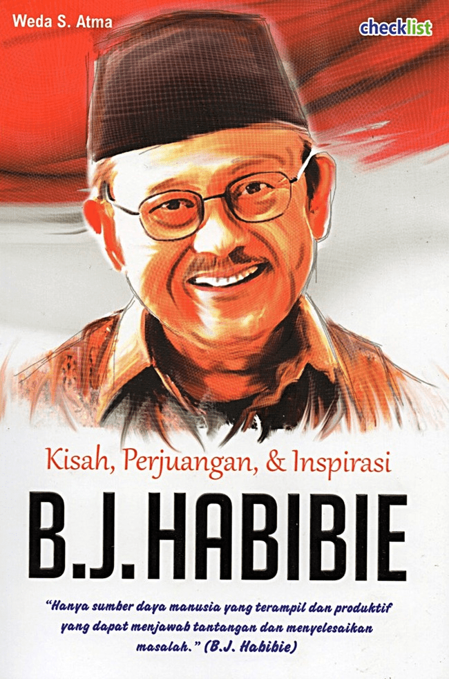
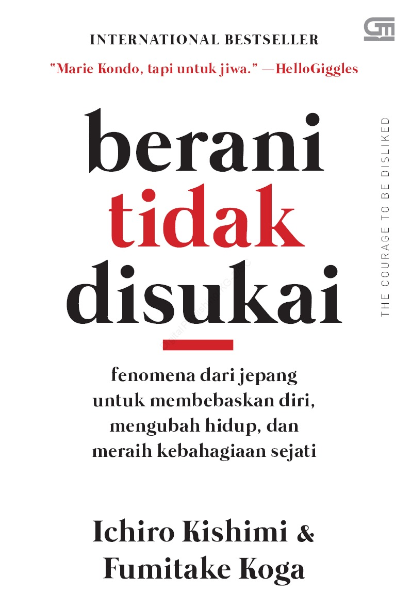
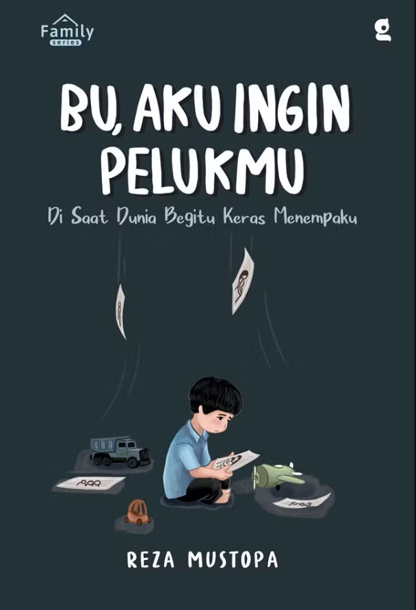

| Sampul Buku | Informasi Buku | Kutipan |
|---|---|---|
|
Non-Fiksi |
Judul : The Power of Habit: Dahsyatnya Kebiasaan Mengapa Kita Melakukan Apa yang Kita Lakukan dalam Hidup dan Bisnis Penulis :Charles Duhigg Penerbit : KPG (Kepustakaan Populer Gramedia) Tahun Terbit : 2013 |
"Satu makalah yang diterbitkan oleh seorang peneliti Duke University pada 2006 menemukan bahwa 40 persen lebih tindakan yang dilakukan orang setiap hari bukanlah keputusan sungguhan, melainkan kebiasaan." — Hal. xvi |
|
 Non-Fiksi |
Judul : Kisah, Perjuangan & Inspirasi B.J. Habibie Penulis :Weda S. Atma Penerbit : Checklist Media, Sleman, Yogyakarta Tahun Terbit : 2017 |
"Hanya sumber daya manusia yang terampil dan produktif yang dapat menjawab tantangan dan menyelesaikan masalah." — B.J. Habibie |
|
 Non-Fiksi |
Judul :
Berani Tidak Disukai: Fenomena dari Jepang untuk Membebaskan Diri, Mengubah Hidup, dan Meraih Kebahagiaan Sejati
Penulis : Ichiro Kishimi & Fumitake Koga Penerbit :PT. Gramedia Pustaka Utama, Jakarta Tahun Terbit : 2019 |
"Masalahmu bukanlah kemampuan atau pengalamanmu, melainkan keberanianmu." — Ichiro Kishimi & Fumitake Koga |
|
Fiksi |
Judul :
Dongeng Lengkap Kancil Penulis : Kak Thifa Penerbit : Laksana Tahun Terbit : 2020 |
"Hewan apa itu, ya?" tanya Kancil yang sedang menuju sungai untuk minum. |
|
 Fiksi |
Judul :
Bu, Aku Ingin Pelukmu: Di Saat Dunia Begitu Keras Menempaku Penulis : Reza Mustopa Penerbit : GradienMediatama, Yogyakarta Tahun Terbit : 2024 |
"Bu, aku pernah menahan lapar hanya karena takut besok gak bisa makan. Kuat dan sabarku sekarang adalah doa yang Ibu sampaikan langsung kepada Tuhan." — Reza Mustopa, hal. 132 |
| Curriculum Vitae | College Experience |